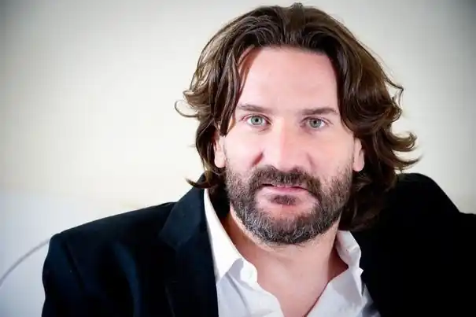
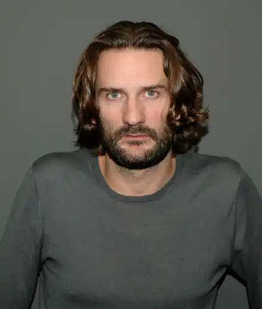
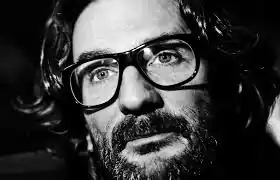
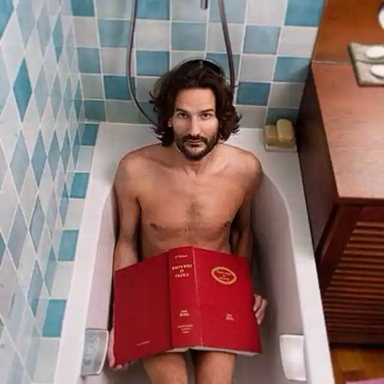

Біографія
Сучасний французький прозаїк, публіцист, літературний критик і редактор.
Родина Фредерік Бегбедер народився 21 вересня 1965 року в місті Нейї-сюр-Сен під Парижем. Мати Бегбедера Крістін де Шатенье — перекладач дамських романів на французьку мову (зокрема, творів Барбари Картланд), а батько, Жан-Мішель Бегбедер, — професійний рекрутер. Брат Шарль Бегбедер — засновник брокерської контори Selftrade і першої у Франції приватної електромережі Poweo. Особистість Настільки нестандартна сім'я не могла не позначитися на способі життя самого Фредеріка. Він любить провокації, самокритику. Бегбедер отримав диплом Паризького інституту політичних досліджень, а потім диплом DESS в області реклами і маркетингу в CELSA (Вища школа інформації і комунікації). В результаті, він став копірайтером у великому рекламному агентстві Young and Rubicam. Одночасно співпрацював у якості літературного критика в журналах Elle, Paris Match, Voici ou encore VSD. Також він перебував у команді літературних критиків у радіопередачі Жерома Гарсена "Маска і перо" на станції France Inter. Він був звільнений з Young and Rubicam через деякий час після виходу в світ роману "99 франків" (згодом перейменованого в "14,99 євро"), що представляє собою сатиру і викриття рекламного бізнесу. Між тим, він став вести свою власну телепередачу про літературу "Книги і я" на каналі Paris Première. За цим послідувала спроба вести передачу l Hypershow на Canal+, правда, керівники каналу незабаром закрили передачу. Був безкоштовним консультантом Робера Ю на президентських виборах 2002 р., хоча в ФКП не складається . Творчість і життя в літературі У січні 2003 видавнича група Flammarion запропонувала Бегбедеру місце редактора. Першою книгою, обраної Бегбедером, виявився роман Лоли Лафон "Непереборне збудження". Це був час його участі в антиглобалистском русі і анархістської групи Black Blocs. Бегбедер воліє карколомні сюжети, з героями, схожими на нього самого. Крім того, він виступив засновником літературної премії, якою удостоїлися, зокрема, книги Мішеля Уельбека і Віржіні Депант, і навіть відзначився в кінематографі — знявся в порнографічному фільмі "Дочка човняра" (з участю зірки жанру Естель Дезанж). Заслужену славу одного з найцікавіших сучасних французьких письменників Фредеріку Бегбедеру принесли романи "Спогади необразумившегося молодої людини" (1990), "Канікули в комі" (1995), "Любов живе три роки" (1997), "Оповіданнячка під екстазі" (1999), "99 франків", що став лідером книжкових продажів 2000 року у Франції.